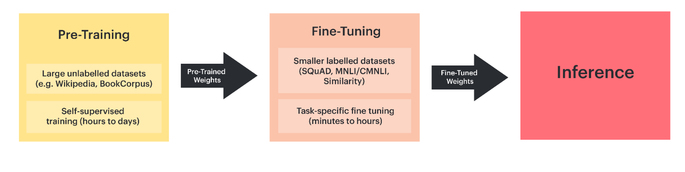
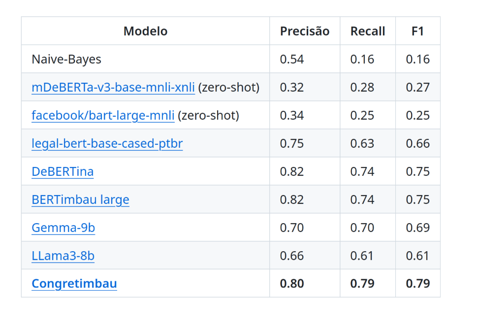

Classificação de texto/imagens com IA de código aberto
ABRAJI/2025
Apresentação
Desde 2012, atuo com comunicação baseada em dados, já tendo colaborado com diversas organizações nacionais e internacionais.
Projetos
Nos últimos anos, desenvolvi modelos de classificação para resolver problemas reais em organizações como…
- Oxford Internet Institute/Fogo Cruzado
- NetLab/UFRJ
- AzMina
- Bellingcat
Roteiro
- Por que código-aberto?
- Noções fundamentais sobre modelos de IA;
- Soluções e exemplos em Python para classificação de textos;
- Classificação de imagens com o Smart Image Sorter;
IA & código aberto
Garante liberdades para usar, estudar, modificar e compartilhar tecnologias.
Definição da OSI requer não só acesso ao código-fonte, mas também dados de treinamento (ou descrição completa) e pesos do modelo.
Duas visões
O que nos vendem…
Grandes
Proprietários
Conhecimento genérico
Serviços
Na “nuvem”
Soluções tamanho “único”
O que (também) queremos…
Pequenos
Código-aberto
Conhecimento específico
Ferramentas
Auto-hospedados
Soluções customizadas
Noções fundamentais
Dado uma informação de entrada (um input como texto ou imagem) determinar categorias/classes pré-estabelecida.
⚠️ Classificação de textos ≠ modelagem de tópicos
💡 Classificação pode ser enquadrada como uma tarefa de geração de texto (IA generativa)
Classificação de texto ontem e hoje
NLP à moda antiga
Muito pré-processamento do texto de entrada (stemming, lematização, etc).
Representação das palavras com vetores esparsos via métodos “bag of words” baseados nas frequências de palavras (exemplo: TF-IDF).
Treina um modelo específico do zero com exemplos próprios.
Computacionalmente barato, ainda é usado até hoje em determinadas situações.
Bag of words

Abordagem atual/pós-Transformers
Pré-processamento inexistente ou mínimo (ex: remoção ou transcrição de emojis)
Representações com vetores densos (embeddings)
Uso de redes neurais e modelos pré-treinados genéricos (grandes modelos de linguagem, LLMs).
Pré-treinamento (basicamente um auto completar) e treino (RLHF, instruction learning, etc)
Computacionalmente intensivo
Tokens
Tokens são as unidades mínimas usadas para representar texto.
É usado para calcular o custo de serviços via API.
Embeddings
Cada token é representado por embeddings, sequências numéricas que refletem características semânticas. O resultado é que elementos numericamente próximos têm semântica semelhante.
A representação final do input é construída a partir das relações que os embeddings utilizados estabelecem entre si.
Linguística distribucional
“O significado de uma palavra é seu uso na linguagem.” (Wittgenstein)
“Você conhecerá uma palavra pela companhia que ela mantém.” (J. R. Firth)
Modelos Transformer (o T do ChatGPT)
Love Attention is all you need, 2017.

Deu origem a duas grandes famílias de modelo: BERT e GPT.
BERT
- Entendimento da linguagem.
- Faz tarefas como classificação de texto e extração de entidades nomeadas.
- Facilmentre customizáveis, leves e exigem poucos recursos.
- Bidirecional.
GPT
- Geração de texto.
- Generalista e multi-propósito.
- Customização mais complexa, pesados, custosos.
- Autoregressivo.
A árvore genealógica

BERT
GPTs

Modos de usar
Inferência zero-shot
Uso de um modelo pré-treinado sem o provimento de exemplos.
Modelos GPT com instruções simples, input e classes apenas.
Few-shot
Uso de um modelo pré-treinado provendo alguns exemplos “anotados”.
Modelos GPT: inclusão de exemplos no prompt. LLMs podem te ajudar a melhor o prompt.
Ajuste fino (fine-tuning)
Altera o modelo para torná-lo mais especializado com base em um conjunto razoável de dados anotados (anotação correlacionada com desempenho).
Outros modos de usar
RAGs: usa uma coleção de documentos para “embasar” as respostas do modelo.
Knowledge distillation: transferir conhecimento de um modelo grande para um modelo pequeno.
Ensembling: combinar predições de múltiplos modelos.
Hugging Face
O Hugging Face está para os desenvolvedores de IA assim como o GitHub está para os desenvolvedores de software.
Estratégias para avaliação
Defina uma linha base de avaliação (trabalhos prévios, ChatGPT, etc)
Use estatísticas de concordâncias, como coeficiente Kappa, para avaliar o grau de concordância de anotações coletivas.
Garanta a qualidade dos dados usados para avaliação do modelo.
Avaliação
Recall: entre os casos realmente positivos, quantos foram acertados. Ideal quando falsos negativos são críticos ou quando a classificação será revisada/validada por pessoas.
Precisão: entre os casos que o modelo classificou como positivos, quantos estavam corretos. Importante para priorizar que as classificações feitas sejam confiáveis.
F1 score: um tipo de média entre as anteriores, bom para mensurar a qualidade geral.
Modelos BERT em português
BERTimbau: “antigo” (2020), mas eficiente e ainda amplamente utilizado para fine-tuning de modelos em português.
Albertina: modelos específicos para português de Portugal e do Brasil.
Congretimbau: BERTimbau com pré-treinamento continuado para ementas de projetos de lei (Câmara e Senado).
Outros modelos BERT
LegalBERT: especializado em textos legais.
DeBERTina: arquitetura com melhorias em relação ao modelo BERT tradicional.
ModernBERT: arquitetura mais moderna, porém treinado apenas em inglês.
Mão na masssa
Zero shot
Few shot
Fine-tuning
Fine-tuning: Classificação de risco aos direitos das mulheres com base em PLs
Fine-tuning
Fogo Cruzado: Detecção de relatos de violência armada em tempo real - paper e repositório no Github
Classificação de imagens
Imagens e IA: formas de uso
Muita além da geração de imagens: responder perguntas baseado em imagens, segmentar imagens, detectar objetos ou pessoas, descrever imagens, geolocalizar imagem, etc.
E os vídeos? A abordagem mais comum é extração de frames, seja baseada em intervalos temporais ou de forma semântica (key frame extraction).
Smart Image Sorter
Notebooks com interface gráfica ou script Python
Classificação zero-shot de coleções de imagens